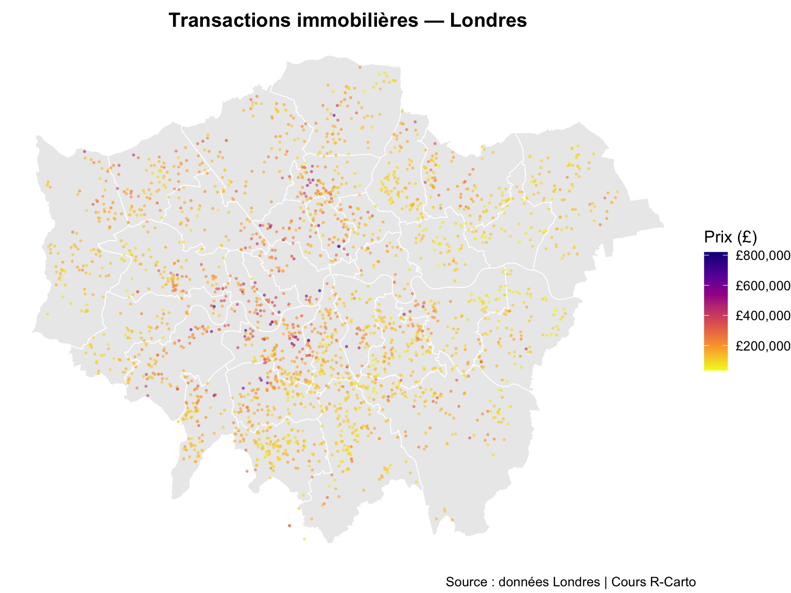
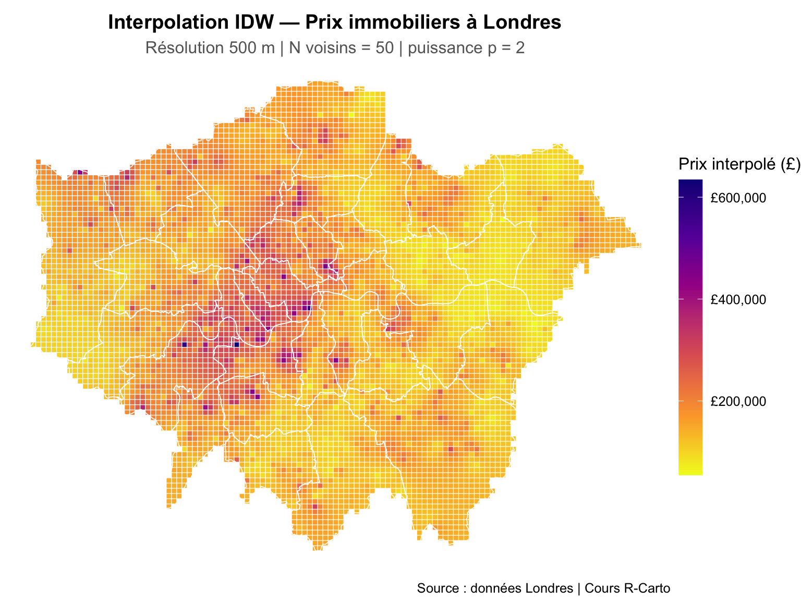
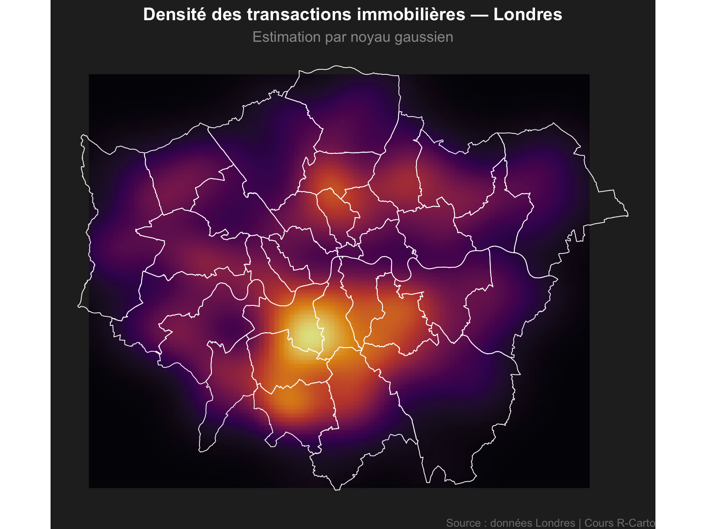

Code
library(sf)
library(gstat)
library(ggplot2)
library(dplyr)
library(scales)
Les données spatiales sont rarement complètes — on observe un phénomène en un nombre limité d’endroits, et on cherche à l’estimer partout. Ce chapitre couvre deux approches complémentaires :
| Méthode | Question posée | Usage typique |
|---|---|---|
| IDW — Pondération Inverse à la Distance | Quelle valeur prédit-on en ce point ? | Prix immobiliers, pollution, température |
| Carte de chaleur (heatmap) | Où les points sont-ils concentrés ? | Densité d’annonces, accidents, commerces |
library(sf)
library(gstat)
library(ggplot2)
library(dplyr)
library(scales)L’IDW prédit la valeur en tout point comme une moyenne pondérée des observations voisines, où le poids décroît avec la distance :
\[\hat{Z}(s_0) = \frac{\sum_{j=1}^{N} w_j \cdot Z(s_j)}{\sum_{j=1}^{N} w_j} \quad \text{avec} \quad w_j = \frac{1}{d(s_0,\, s_j)^p}\]
districts <- read_sf("data/London/Polygons/districts.shp")
housesales_sf <- read.csv("data/London/Tables/housesales.csv") |>
st_as_sf(coords = c(17, 18)) |>
st_set_crs(27700)
cat("Nb transactions :", nrow(housesales_sf), "\n")Nb transactions : 2444 ggplot() +
geom_sf(data = districts, fill = "grey92", color = "white", linewidth = 0.3) +
geom_sf(data = housesales_sf, aes(color = price),
size = 0.4, alpha = 0.5) +
scale_color_viridis_c(
option = "plasma", direction = -1,
name = "Prix (£)",
labels = label_comma(prefix = "£")
) +
labs(title = "Transactions immobilières — Londres",
caption = "Source : données Londres | Cours R-Carto") +
theme_void(base_size = 12) +
theme(plot.title = element_text(face = "bold", hjust = 0.5))
housesales_sp <- sf::as_Spatial(housesales_sf)
gs <- gstat(
formula = price ~ 1,
data = housesales_sp,
nmax = 50,
set = list(idp = 2)
)
# Grille de prédiction à 500 m, clippée sur Londres
grid_sf <- st_make_grid(districts, cellsize = 500, what = "centers") |>
st_as_sf() |>
st_filter(districts)
idw_sf <- predict(gs, sf::as_Spatial(grid_sf)) |>
st_as_sf() |>
rename(pred = var1.pred)[inverse distance weighted interpolation]ggplot() +
geom_sf(data = idw_sf, aes(color = pred), size = 1.2, shape = 15) +
scale_color_viridis_c(
option = "plasma", direction = -1,
name = "Prix interpolé (£)",
labels = label_comma(prefix = "£")
) +
geom_sf(data = districts, fill = NA, color = "white", linewidth = 0.3) +
labs(
title = "Interpolation IDW — Prix immobiliers à Londres",
subtitle = "Résolution 500 m | N voisins = 50 | puissance p = 2",
caption = "Source : données Londres | Cours R-Carto"
) +
theme_void(base_size = 12) +
theme(
plot.title = element_text(face = "bold", hjust = 0.5),
plot.subtitle = element_text(color = "grey40", hjust = 0.5),
legend.key.height = unit(1.5, "cm")
)
| Paramètre | Valeur actuelle | À tester |
|---|---|---|
nmax (N voisins) |
50 | 10, 100 |
idp (puissance) |
2 | 1, 4 |
cellsize (résolution) |
500 m | 250 m, 1000 m |
gs_test <- gstat(formula = price ~ 1,
data = sf::as_Spatial(housesales_sf),
nmax = ___,
set = list(idp = ___))
grid_test <- st_make_grid(districts, cellsize = ___, what = "centers") |>
st_as_sf() |> st_filter(districts)
idw_test <- predict(gs_test, sf::as_Spatial(grid_test)) |>
st_as_sf() |> rename(pred = var1.pred)
ggplot() +
geom_sf(data = idw_test, aes(color = pred), size = 0.8, shape = 15) +
scale_color_viridis_c(option = "plasma", direction = -1,
labels = label_comma(prefix = "£")) +
geom_sf(data = districts, fill = NA, color = "white", linewidth = 0.3) +
theme_void()Une heatmap répond à une question différente de l’IDW : non pas quelle valeur en un point, mais combien de points se concentrent autour. Elle est idéale pour visualiser la densité spatiale d’un phénomène.
stat_density_2d() de ggplot2 calcule une estimation de densité par noyau gaussien bidimensionnel directement sur les coordonnées — aucun package supplémentaire nécessaire.
coords <- st_coordinates(housesales_sf) |>
as.data.frame() |>
setNames(c("x", "y"))
ggplot() +
geom_sf(data = districts, fill = "grey15", color = "grey35", linewidth = 0.3) +
stat_density_2d(
data = coords,
aes(x = x, y = y, fill = after_stat(density)),
geom = "raster",
contour = FALSE,
interpolate = TRUE,
alpha = 0.85
) +
scale_fill_viridis_c(option = "inferno", name = "Densité", guide = "none") +
geom_sf(data = districts, fill = NA, color = "white", linewidth = 0.3) +
labs(
title = "Densité des transactions immobilières — Londres",
subtitle = "Estimation par noyau gaussien",
caption = "Source : données Londres | Cours R-Carto"
) +
theme_void(base_size = 12) +
theme(
plot.title = element_text(face = "bold", hjust = 0.5, color = "white"),
plot.subtitle = element_text(color = "grey60", hjust = 0.5),
plot.caption = element_text(color = "grey50", size = 9),
plot.background = element_rect(fill = "grey15", color = NA)
)
Filtrez les transactions au-dessus de 500 000 £ et produisez une heatmap pour visualiser où se concentrent les biens les plus chers.
coords_cher <- housesales_sf |>
filter(price > ___) |>
st_coordinates() |>
as.data.frame() |>
setNames(c("x", "y"))
ggplot() +
geom_sf(data = districts, fill = "grey15", color = "grey35", linewidth = 0.3) +
stat_density_2d(
data = coords_cher,
aes(x = x, y = y, fill = after_stat(density)),
geom = "raster", contour = FALSE, interpolate = TRUE, alpha = 0.85
) +
scale_fill_viridis_c(option = "magma", guide = "none") +
geom_sf(data = districts, fill = NA, color = "white", linewidth = 0.3) +
labs(title = "Transactions > 500 000 £ — Londres") +
theme_void() +
theme(plot.background = element_rect(fill = "grey15", color = NA),
plot.title = element_text(color = "white", face = "bold", hjust = 0.5))Reproduisez les deux analyses avec les données Airbnb de Paris :
Partie A — IDW sur le prix
arrondiss_lambert.shp et listings.csvPartie B — Heatmap de densité
st_coordinates()stat_density_2d() sur fond sombre→ Corrigé : Interpolation Paris
# IDW
gs <- gstat(formula = var ~ 1, data = sf::as_Spatial(pts_sf),
nmax = 50, set = list(idp = 2))
grid <- st_make_grid(polygone, cellsize = 500, what = "centers") |>
st_as_sf() |> st_filter(polygone)
result <- predict(gs, sf::as_Spatial(grid)) |>
st_as_sf() |> rename(pred = var1.pred)
# Heatmap
coords <- st_coordinates(pts_sf) |> as.data.frame() |> setNames(c("x", "y"))
ggplot() +
stat_density_2d(data = coords, aes(x = x, y = y, fill = after_stat(density)),
geom = "raster", contour = FALSE, interpolate = TRUE)← Précédent : Géotraitement — Londres → Suivant : Cartes interactives avec Leaflet
Dr. Elisabetta Pietrostefani — Directrice Adjointe, Geographic Data Science Lab — Université de Liverpool | Co-Directrice, Imago : Data Service for Imagery | Chercheuse Associée, London School of Economics